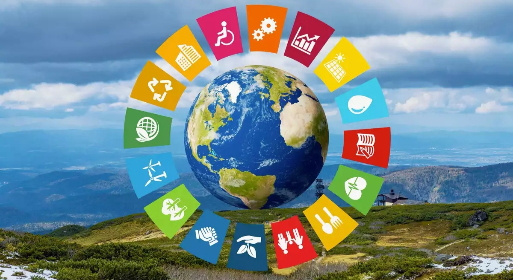
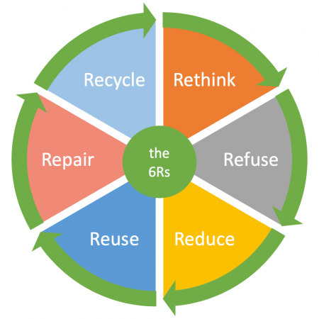

The future of waste management lies in innovation and forward-thinking solutions. Embracing new technologies and methodologies is essential to address the evolving nature of waste. From advanced recycling technologies to circular economy models, re-thinking waste management is about staying ahead of the curve.
Implementing IoT (Internet of Things) devices in waste bins to monitor and optimize waste collection routes. This reduces fuel consumption and minimizes the carbon footprint associated with collection vehicles.
Utilizing blockchain technology to create transparent and traceable supply chains for products. Consumers can access information about a product's journey from raw material to disposal, encouraging companies to adopt sustainable practices.
